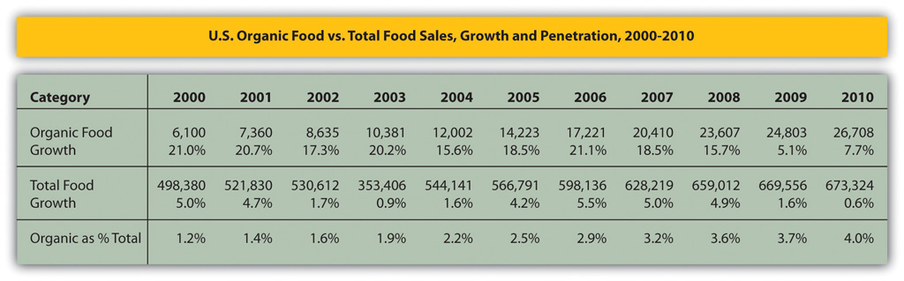
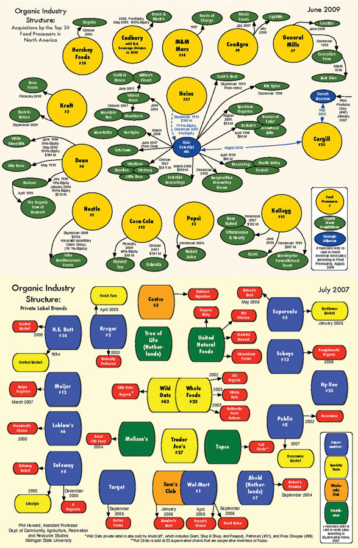

Organic food and beverages are produced without pesticides and synthetic fertilizers and are different from “natural” foods. Food labeled “natural” cannot be labeled organic unless they meet US Department of Agriculture (USDA) standards. The USDA organic certification system includes various levels of organic. The highest level is 100 percent organic; the next highest level is “organic” if 95 percent of ingredients are organic.“Organic Foods: Are They Safer? More Nutritious?,” Mayo Clinic Staff, accessed August 31, 2011, http://www.mayoclinic.com/health/organic-food/NU00255/METHOD=print.
Natural foods, and yogurt in particular, have moved from being requested by a small group of committed individuals and only available in specialized health food stores to broad appeal available in virtually all supermarkets and grocery food stores. Throughout the 1990s and 2000s several social, economic, and technological trends impacted sales growth and industry dynamics in the organic and natural food segment of the food and beverage industry. Some of these trends include the following:
USDA Organic Labeling Standards
In 2002 the U.S. Department of Agriculture (USDA) established an organic certification program that required all organic foods to meet strict government standards. These standards regulate how such foods are grown, handled and processed. Any product labeled as organic must be USDA certified. Only producers who sell less than $5,000 a year in organic foods are exempt from this certification; however, they’re still required to follow the USDA’s standards for organic foods. If a food bears a USDA Organic label, it means it’s produced and processed according to the USDA standards. The seal is voluntary, but many organic producers use it. Products that are completely organic—such as fruits, vegetables, eggs or other single-ingredient foods—are labeled 100 percent organic and can carry the USDA seal. Foods that have more than one ingredient, such as breakfast cereal, can use the USDA organic seal plus the following wording, depending on the number of organic ingredients:
100 percent organic. To use this phrase, products must be either completely organic or made of all organic ingredients.
Organic. Products must be at least 95 percent organic to use this term.
Products that contain at least 70 percent organic ingredients may say “made with organic ingredients” on the label, but may not use the seal. Foods containing less than 70 percent organic ingredients can’t use the seal or the word “organic” on their product labels. They can include the organic items in their ingredient list, however.
Source: “Organic Foods: Are They Safer? More Nutritious?,” Mayo Clinic Staff, last modified August 31, 2011, http://www.mayoclinic.com/health/organic-food/NU00255/METHOD=print.
In 2010, the US organic food market was a $26.7 billion industry, up 8 percent from the previous year and rising from $1 billion in 1990. Organic foods represented a 4 percent share of the $673 billion US food industry.“Industry Statistics and Projected Growth,” Organic Trade Association, http://www.ota.com/organic/mt/business.html. Organics had significantly outpaced the 0.6 percent growth rate for the total food industry. Organic fruits and vegetables were $10.6 billion or 40 percent of the total organic food industry and nearly 12 percent of all US fruit and vegetable sales. Organic dairy was the second-largest organic category with $3.9 billion or 6 percent of the total US dairy market.
Figure 13.6 US Organic Food vs. Total Food Sales Growth and Penetration, 2000–2010
Source: Organic Trade Association's 2011 Organic Industry Survey.
Since 2002, the North American organic food and beverage industry had experienced major industry consolidation causing significant change to its market structure. When the USDA passed the US National Organic Labeling Standard in 2002 large food companies were quick to react. The standard allowed food companies to voluntarily label products as “USDA-Organic” if they met the USDA standard. Although labeling was voluntary, it became a major marketing tool for the large conventional food companies, such as General Mills, Kraft, Dean, Pepsi, Kellogg, and Cargill, among several others.
Labeling helped to validate the organic movement. To enter the market quickly, the majors began acquiring the better-known and more successful organic and natural food start-ups. Industry analysts reported that the major food companies could quickly add to their bottom-line profits by acquisition, despite the organic industry’s origins as a form of resistance to the mass production and mass marketing methods employed by the majors.
Major food companies paid a significant premium for the smaller organic companies. Premiums were based on the higher sales growth. The acquisitions provided majors with insights on how to achieve customer loyalty and find new growth opportunities—two areas in which the smaller organic food manufacturers were outperforming the larger major food companies.Christine MacDonald, “Big/Green: Eco-Conscious Brands Are Increasingly Being Bought Out by Giant Corporations. Can We Trust Them?,” Sacramento News and Review, July 21, 2011, accessed August 2, 2011, http://www.newsreview.com/sacramento/big-green/content?oid=2838435.
Notable acquisitions were (acquiring company in parenthesis) Honest Tea (Coke), Ben & Jerry’s (Unilever), Cascadian Farms (General Mills), Kashi (Kellogg), Tom’s of Maine (Colgate-Palmolive), and Naked Juice (PepsiCo).Philip H. Howard, “Consolidation in the North American Organic Food Processing Sector, 1997 to 2007,” International Journal of Sociology of Agriculture and Food 16, no. 1: 13–30, accessed April 3, 2009, https://www.msu.edu/~howardp. Thus the rapid entry by major companies into organics segment of the industry caused a shakeout where several of the smaller organic and natural food companies were acquired or forced out of business. (See Figure 13.7 "Organic Processing Industry").
Figure 13.7 Organic Processing Industry
Source: Philip H. Howard, “Organic Processing Industry Structure,” Michigan State University, accessed August 2, 2011, https://www.msu.edu/~howardp./organicindustry.html.
The organic food industry has continued to grow. Two companies who are standouts in organic food markets are Whole Foods Market and Walmart. Founded in 1980, Whole Foods Market reported $9 billion in sales for 2010. Whole Foods was the leading US retailer for organic and natural foods with 304 stores in the United States, Canada, and the United Kingdom. Walmart has made a major investment in organic foods in its retail and club stores in what is viewed by many as a tipping point for the organic industry and a favorable signal for continued long-term industry growth.
Walmart’s entry into organic and natural foods threatened the organics supply chain, as it lowered prices paid to family farms. Another issue is climate-change impacts on water and crops, which are expected to continue to drive organic ingredients prices up. Another trend impacting the organics market is the aging US population, with its growing concern about health.
Overall demand for yogurt has been growing and new yogurt categories have been rapidly emerging, especially products aimed exclusively for women, kids, and the elderly.Ted Reinsteon, “It’s Crazy Out There,” Thebostonchannel.com, April 23, 2011, accessed August 17, 2011, http://www.thebostonchannel.com/index.html. For example, since 2002, product introductions targeted to children included Breyers’ YoCrunch, Stonyfield’s YoBaby and YoKids, and Yoplait’s Scooby Doo–inspired “Ro-gurt.”
By 2011, Greek yogurt emerged as the single most competitive battlefield in the $6.8 billion yogurt industry. Euromonitor International projected Greek yogurt sales to nearly double to $1.5 billion in 2011, up from $60 million in 2006.Stuart Elliott, “Chobani, Greek Yogurt Leader, Lets Its Fans Tell the Story,” New York Times, February 16, 2011, accessed August 17, 2011, http://www.nytimes.com/2011/02/17/business/media/17adco.html. Analysts reported that sales of Greek yogurt were increasing faster than for regular yogurt because many consumers perceive Greek yogurt—thicker, creamier, less sweet, and with more protein—to be healthier than regular yogurt.
Two companies drove most of this growth, Chobani, owned by privately held Agro Farma, Inc., and Fage, S.A., a Greek dairy company. The trend toward Greek yogurt started in early 2000s when Fage entered the US market, but Chobani is the market leader going from nonexistence four years ago to 2010 sales of approximately $500 million. Kraft Foods discontinued its yogurt business in 2007 only to reenter the industry in 2010 with its Greek yogurt Athenos.
Rapid Greek yogurt growth caught General Mills (owner to the US Yoplait rights) and Danone by surprise. Danone and General Mills were fierce rivals with number one and two in US yogurt sales, respectively. Consumers not only found Greek yogurt to be a healthy alternative to regular yogurt, but they were willing to pay a premium price for it.